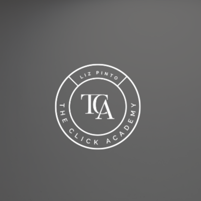

The Click Academy

Led by Liz Pinto
A working photographer from Panama, teaching from her own wedding, portrait and event work.
The whole community is in Spanish. She also hosts a podcast, The Click Boss, on building a photography business.
 2/5
2/5